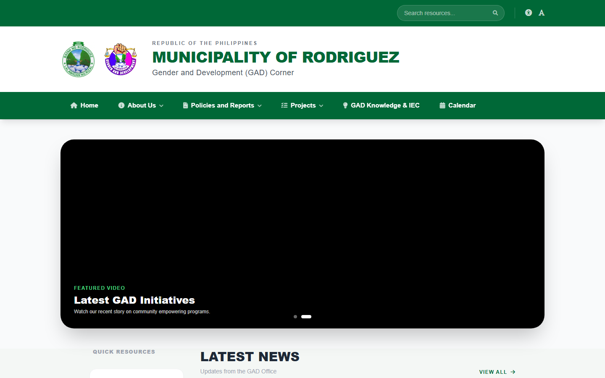

GAD Corner Website
★ FeaturedThe official digital hub for Gender and Development (GAD) initiatives of Montalban, Rizal — a centralized portal for GAD news, programs, and services. Features news and article publishing, a media gallery of community programs, and quick-access resources like the GAD Plan & Budget, GAD Projects, and Knowledge & IEC materials.

Live gad-3.onrender.com Code github.com/ryujihub